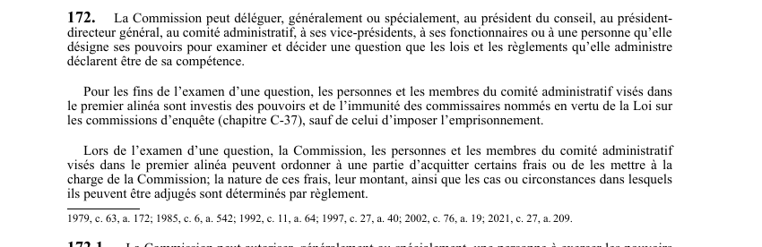

art-172-LSST : délégation du pouvoir de décider et pouvoirs d'enquête
- Article de délégation, malgré le nom du fichier : il n'a rien à voir avec les inspecteurs. C'est lui qui explique qu'une décision « de la CNESST » soit en fait signée par un employé.
- La Commission peut déléguer, généralement ou spécialement, son pouvoir d'examiner et de décider une question relevant de sa compétence à 6 catégories de délégataires : le président du conseil, le président-directeur général, le comité administratif, les vice-présidents, ses fonctionnaires ou une personne qu'elle désigne.
- Le délégataire n'est pas un simple employé qui exécute : pour examiner la question, il est investi des pouvoirs et de l'immunité des commissaires nommés en vertu de la Loi sur les commissions d'enquête (chapitre C-37), avec 1 seule exclusion, le pouvoir d'imposer l'emprisonnement.
- Pouvoir sur les frais : la Commission, ces personnes et les membres du comité administratif peuvent ordonner à une partie d'acquitter certains frais ou mettre ces frais à la charge de la Commission. Nature, montant et cas d'ouverture sont fixés par règlement.
- Article très remanié : 1979 (c. 63, a. 172), puis 1985, 1992, 1997, 2002 et 2021 (c. 27, a. 209) ; texte à jour au 26 mars 2024.
🌐 LegisQuébec · 📄 PDF officiel (page 48)
Texte officiel
La Commission peut déléguer, généralement ou spécialement, au président du conseil, au président- directeur général, au comité administratif, à ses vice-présidents, à ses fonctionnaires ou à une personne qu’elle désigne ses pouvoirs pour examiner et décider une question que les lois et les règlements qu’elle administre déclarent être de sa compétence.
Pour les fins de l’examen d’une question, les personnes et les membres du comité administratif visés dans le premier alinéa sont investis des pouvoirs et de l’immunité des commissaires nommés en vertu de la Loi sur les commissions d’enquête (chapitre C‐37), sauf de celui d’imposer l’emprisonnement.
Lors de l’examen d’une question, la Commission, les personnes et les membres du comité administratif visés dans le premier alinéa peuvent ordonner à une partie d’acquitter certains frais ou de les mettre à la charge de la Commission; la nature de ces frais, leur montant, ainsi que les cas ou circonstances dans lesquels ils peuvent être adjugés sont déterminés par règlement.
Texte de l’article 172 LSST, extrait de la couche texte du PDF officiel (page 48), sans OCR ni retouche. La capture ci-dessous et le PDF font foi.
{kind=link}

Toucher l'image pour l'agrandir🔗 Ouvrir a cette page : LSST.pdf : page 48 · texte a jour au 26 mars 2024
Voir aussi
- art. 170.1 : entente pour ressources gouvernementales partagées · droit : malgré les articles 176.0.1 et 176.0.2, la Commission peut conclure avec le gouvernement, un de ses ministères ou un de ses organismes une entente lui permettant d'obtenir des ressources ou services dont bénéficient le gouvernement, ce ministère.
- art. 171 : disposition abrogée · disposition-abrogee.
- art. 172.1 : délégation équité salariale normes (abrogé) · faculté : la Commission peut autoriser, généralement ou spécialement, une personne à exercer les pouvoirs qui lui sont conférés par la Loi sur l'équité salariale et par la Loi sur les normes du travail ; le deuxième alinéa de l'article 172 s'applique à une personne ainsi visée.
- art. 173 : exigence renseignements personnes concernées · faculté : la Commission peut exiger de toute personne les renseignements ou informations dont elle a besoin pour l'application des lois et des règlements qu'elle administre.
- 🔧 Modifié par : LMRSST · Article modificateur de la LMRSST.
- ↑ Loi : LSST
Pages qui pointent ici (5)
- art-170.1-LSST : entente pour ressources gouvernementales partagées Recueil législatif
- art-173-LSST : pouvoir d'exiger des renseignements Recueil législatif
- art-173.1-LSST : support technologique obligatoire pour documents Recueil législatif
- art-209-LMRSST : modifie l'art. 172 LSST Recueil législatif
- LMRSST : Chapitre II : Modifications à la LSST Recueil législatif